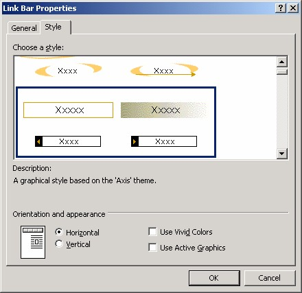
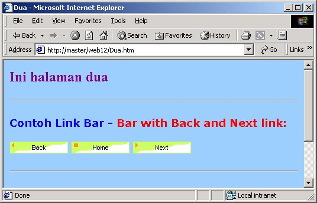

2 Membuat Link Bar Next - Back
Link bar Next – Back sebenarnya masih terkait dengan jenis link bar Custom Link.
Bedanya terletak pada posisi halaman dan posisi tujuan link.
Link bar Custom Link, yang telah kita bahas sebelumnya, cocok untuk Home Page.
Sedangkan link bar Next – Back cocok untuk halaman yang memiliki “teman
setingkat”. Misalnya untuk perpindahan antara halaman Anak dengan Anak lainnya.
Atau perpindahan antara halaman Cucu dengan Cucu lainnya.
Baiklah, mari kita menyusun link bar Next – Back.
1. Tampilkan navigatiion View.
2. Buatlah tiga halaman di bawah Home Page.
3. Namailah dengan Satu, Dua dan Tiga.
4. Klik ganda halaman Satu sehingga terbuka.
5. Gantilah warna latar belakang halaman menjadi biru (Klik kanan è Properties.
Pada kotak dialog klik Background dan pilihlah warna biru).
6. Tambahkan teks yang sesuai pada halaman. Misalnya tentang judul halaman,
“Halo aku halaman 1”.
7. Formatlah warna font sehingga sesuai dengan warna biru, misalnya putih, biru
muda, merah muda, kuning atau warna terang lainnya.
8. Untuk mempertegas tampilan, tambahkan garis horisontal pada lokasi tertentu.
Caranya, aktifkan perintah Insert è Horisontal Line.
9. Klik lokasi penyisipan Link Bar, misalnya seperti Gambar 13.23.
Gambar 13.23 Penampatan kursor
10. Aktifkan pilihan Insert _ Web Component. Kotak dialog Insert Web
Component terbuka.
Gambar 13.24 Pilihan Bar With back and next links
11. Pada bidang kiri pilih Link Bars dan pada bidang kanan pilihlah Bar With
back and next links. Klik Next, muncul kotak dialog Link Bar Properties.
Gambar 13.25.
Gambar 13.25 Pilihan Blank
12. Pilihlah jenis tombol yang cocok dengan warna halaman biru, misalnya Blank.
Gambar 13.25. Klik Next, muncul kotak dialog pemilihan jenis link bar, apakah
horisontal (yang pertama) atau yang vertikal (pilihan kedua).
Gambar 13.26 Pilihan jenis link bar
13. Jangan ubah pilihan pertama (horisontal) yang sudah aktif. Klik Next, muncul
kotak dialog pengaturan link.

Gambar 13.27 Pengaturan link
14. Klik kotak cek Home Page, lalu klik tombolOK. Hasilnya pada halaman seperti
Gambar 13.28.
Gambar 13.28 Tombol Home dan Next muncul pada halaman
Perhatikan tombol yang muncul, hanya dua, yaitu Home (hasil pengaktifan pilihan
Home Page) dan Next. Tidak ada Back, sebab ini adalah halaman pertama dalam
kelompoknya.
2.1 Mengatur halaman dua
Setelah mengatur halaman Home Page dan halaman Satu, berikutnya kita akan
mengatur halaman Dua.
1. Klik ganda halaman Dua sehingga terbuka.
2. Gantilah warna latar belakang halaman menjadi biru muda (Klik kanan lalu klik
perintah Properties. Pada kotak dialog Page Properties klik Background dan
pilihlah warna biru muda).
3. Tambahkan teks yang sesuai pada halaman. Misalnya tentang judul halaman,
“Ini halaman 2”.
4. Formatlah warna font sehingga sesuai dengan warna biru muda.
5. Tambahkan garis horisontal (Insert è Horisontal Line ) pada lokasi tertentu
untuk mengatur komposisi.
6. Klik lokasi penyisipan Link Bar - Back dan Next, misalnya seperti Gambar
13.29.
Gambar 13.29 Lokasi penyisipan kursor
7. Aktifkan pilihan Insert _ Web Component. Kotak dialog Insert Web
Component terbuka.
8. Pada bidang kiri pilih Link Bars dan pada bidang kanan pilihlah Bar With
back and next links. Klik Next, muncul kotak dialog Link Bar Properties.
Gambar 13. 30.

Gambar 13.30 Pengaturan
9. Pilihlah jenis tombol yang cocok dengan warna halaman biru muda, misalnya
Waves. Gambar 13.31.
Gambar 13.31Pilihan Waves
10. Klik Next, muncul kotak dialog pemilihan jenis link bar, apakah horisontal
(yang pertama) atau yang vertikal (pilihan kedua). Gambar 13.32.

Gambar 13.32 Pilihan Horisontal
11. Jangan ubah pilihan pertama (horis\ontal) yang sudah aktif. Klik Next, muncul
kotak dialog pengaturan link.

Gambar 13.33 Kotak dialog pengaturan link
12. Klik kotak cek Home Page, lalu klik tombolOK. Hasilnya pada halaman seperti
Gambar 13.34.
Gambar 13.34 Hasli pemasangan pada halaman
Perhatikan tombol yang muncul, kini berjumlah tiga, yaitu Back, Home (hasil
pengaktifan pilihan Home Page) dan Next. Muncul tombol Back, sebab ini adalah
halaman kedua di dalam kelompoknya (sehingga masih ada halaman sebelumnya)
Dan muncul tombol Next sebab masih ada halaman berikutnya (ketiga).
2.2 Halaman tiga
Kini saatnya mengatur halaman terakhir.
1. Klik ganda halaman Tiga sehingga terbuka.
2. Gantilah warna latar belakang halaman menajdi merah muda (Klik kanan è
Properties. Klik Background dan pilihlah warna merah muda).
3. Tuliskan teks: “Saya halaman terakhir, 3”. Dan Contoh Link Bar – Bar with
custom links.
4. Formatlah warna font sehingga sesuai dengan warna merah muda.
5. Tambahkan garis horisontal (Insert è Horisontal Line ).
6. Klik lokasi penyisipan Link Bar - Back dan Next, misalnya seperti Gambar
13.35.
Gambar 13.35 Lokasi kursor
7. Aktifkan pilihan Insert _ Web Component. Kotak dialog Insert Web
Component terbuka.

Gambar 13.36 Pilihan Bar With back and next links
8. Pada bidang kiri pilih Link Bars dan pada bidang kanan pilihlah Bar With
back and next links. Klik Next, muncul kotak dialog Link Bar Properties.
Gambar 13.36.

Gambar 13.37 Pilihan Axis
9. Pilihlah jenis tombol yang cocok, misalnya Axis. Gambar 13.37. Klik Next,
muncul kotak dialog pemilihan jenis link bar, apakah horisontal (yang pertama)
atau yang vertikal (pilihan kedua).

Gambar 13.38 Pilihan Horisontal
10. Jangan ubah pilihan pertama (horis\ontal) yang sudah aktif. Klik Next, muncul
kotak dialog pengaturan link. Gambar 13.39.
Gambar 13.39 Kotak dialog Link Bar Properties
11. Klik Kotak cek Home Page, lalu OK. Hasilnya:
Gambar 13.40 Hasil pemasangan Link bar
Perhatikan tombol yang muncul, hanya dua, yaitu Home (hasil pengaktifan pilihan
Home Page) dan Back. Tidak ada Next, sebab ini adalah halaman terakhir di dalam
kelompoknya.
2.3 Tampilan di browser
Nah, sampai di sini kita berhasil menyusun dan mem-format keempat halaman. Kini
saatnya untuk mengujinya di browser.
Aktifkan halaman Home Page lalu klik tombol Preview in Browser. Tampilannya
tampak seperti Gambar 13.42.
Gambar 13.41 Home page
Kemudian klik tombol Halaman Satu, muncul Halaman Satu seperti Gambar 13.42
Klik tombol Home, kembali ke Home Page.
Gambar 13.42 Halaman Satu
Pada Home Page klik tombol Halaman Dua, muncul Halaman Dua seperti Gambar
13.43. Klik tombol Home, kembali ke Home Page.

Gambar 13.43 Halaman Dua
Pada Home Page klik tombol Halaman Tiga, muncul Halaman Tiga seperti Gambar
13.44. Klik tombol Home, kembali ke Home Page.
Gambar 13.44 Halaman Tiga
Pada halaman Satu, jika Anda klik tombol Next, akan muncul halaman Dua. Pada
halaman Dua Anda klik Next akan muncul halaman Tiga.
Selanjutnya pada halaman Tiga jika Anda klik Back, muncul halaman Dua. Pada
halaman Dua Anda klik Back akan muncul halaman Satu.
Copyright © Herlan Lesmana
Created with the Freeware Edition of HelpNDoc: Full featured Documentation generator